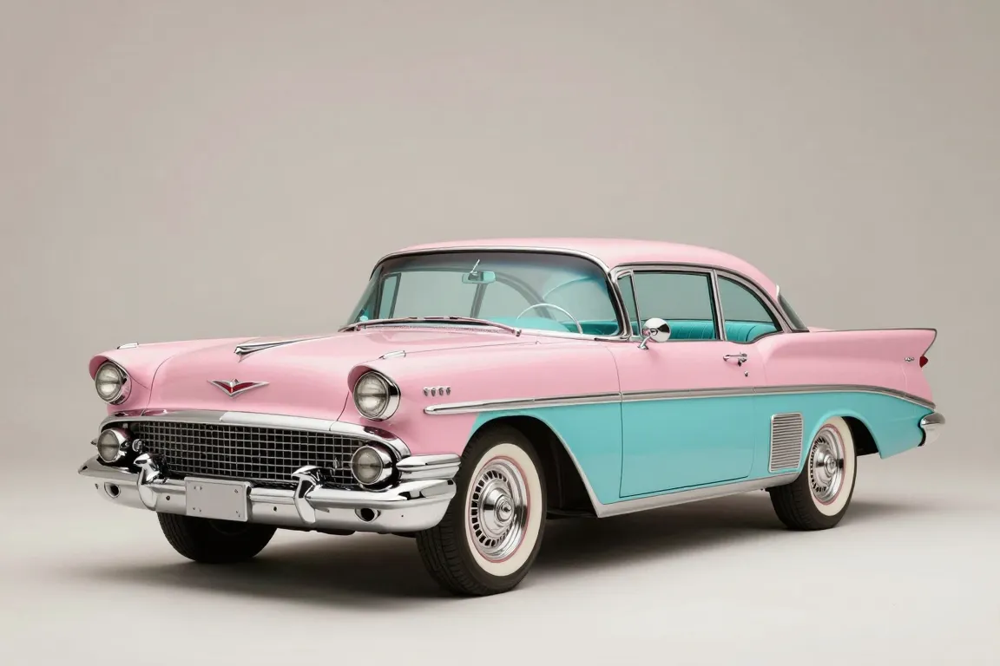

мода · 1948–1963 · также: Автомобиль реактивной эры, Американский автомобиль пятидесятых, Детройтский хром
Большой американский автомобиль реактивной эры. Длинный низкий кузов с хвостовыми плавниками, широкая хромовая решётка, панорамное лобовое стекло и двухцветная окраска. В салоне яркий винил и ткань.

Главная идея
После войны автомобиль показывает изобилие: каждый год он длиннее, ниже и ярче, с плавником и хромом, копирующими реактивный самолёт.
Принципы дизайна
Поднимайте хвостовой плавник на заднем крыле, от 5 см в 1948 году до 30 см в 1959-м.
Расширяйте решётку на всю ширину автомобиля в хромовую планку с яркими зубьями.
Загибайте лобовое стекло вокруг углов, чтобы получить панорамный обзор.
Красьте кузов в два тона, разделённых хромовым копьём вдоль бока.
Ставьте бамперы с пулеобразными защитами и вставляйте задние фонари в плавник.
Делайте салон ярким, с виниловой тканью плетёного рисунка, нейлоновой тканью и алюминиевой отделкой панели.
Меняйте кузов каждый год, чтобы новая модель выглядела длиннее и ниже прежней.